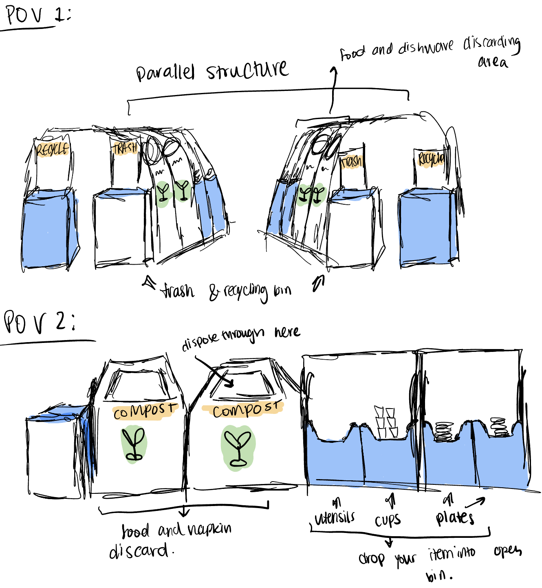

The Interface
The interface allows students to discard their own plates and waste after dining at the ratty. The separation of categories gives an easier job to the dining hall workers and forces students to compost their leftover food. The main components are the various bins where you place the dishes and the compost & recycling bins where you can throw out paper, leftover food, and napkins.
But why this interface?
I am a frequent ratty diner and I noticed that everytime I was disposing of dishes I was walking back and forth a lot. As you will see in my observations, I am not the only one. When given the opportunity to do a project where I got to analyze users, I figured I would actually pick something that impacted my day to day life as well as other Brown Students. I will say it's impact is nothing more than a minor inconvenience for us at worse, but it's easily understandable and relatable.
Noted Observations
In order to get a better understanding of the interface, I went to the Ratty and took some notes while I watched users dispose of the meals. Here is a summary of what I gathered:
- Diners tend to place their cups first, then empty their plates into compost with utensils, then discard utensils, and lastly of plate
- Diners who do not use the above approach have a lot of movement back and forth between stations.
- Some users tend to be more careful when disposing of food in the compost bin, while others occasionally miss and do not clean their mess.
- Users that end up eating more than one plate are more likely to jump around between stations, hold up the line, and need to place things down while emptying others.
Interview Responses
3 Users of the interface were interviewed. Here is a summary of their responses:
- How would you rate your experience with the ratty trash/dish disposal system on a scale of 1 to 10?
- The average rating of the ratty amongst the interviewed is 6.66
- Describe your experience with the various bins (compost, utensil, cup, etc).
- All interviewed users expressed that the system was just ok.
- Users 1 and 3 expressed frustrations with how unsanitary the system is. User 2 expressed frustrations with the order of the bins. User 3 expressed frustration with the timing of when workers remove bins in order to empty them.
- In comparison to other dining facilities, how does the ratty disposal system rank?
- The ratty ranks low in comparison to other dining halls when it comes to disposal systems.
- Users 1 and 2 expressed a liking for the VDUB conveyor belt. However, user 3 expressed that other dining halls should be more like the Ratty because of environmental reasons and to help the workers.
Personas
As a part of understanding the highlights and lowlights of the user experience at the ratty, I created empathy maps for 2 user personas.

Here is the first user, Diner Debbie. She is a frequent ratty diner since she lives on the Wriston quad, and she loves the Ratty salad bar. Debbie doesn’t mind the ratty's disposal system, but often struggles when she has to dispose of more than one plate. Additionally, she is concerned with how messy it can get. This user persona represents a lot of the users I observed and reflects some of the responses I got in the interviews, including the concerns about sanitation and the order of the bins.
The second user is Always Late Liam. He only goes to the ratty in between classes because it’s just the closest for him, and he really enjoys their grilled chicken. Liam is not a fan of the ratty disposal system because he always leaves when everyone else is leaving to go to their next class so he always ends up waiting. This persona represents some of the users I observed and reflects some of the interview responses because he is always in a rush, so he always makes a mess at the stations.
Storyboard
The last key part to understand a user's experience is to create a storyboard of a possible interaction one of your personas can have. Here is a storyboard I created for the Diner Debbie:
Debbie has just finished her meal at the ratty. She goes to stand in the line that has formed for the dish disposal area.
Debbie is at the front of the line after waiting for a little under 4 minutes. She first discards the recyclable paper that came from the ice cream cone she had.
Debbie places her cup down on top of the compost bin and pushes her leftover food into the compost bin.
Debbie steps over to the utensil bin and drops her fork in there. She realizes she left her cup on top of the compost bin.
Debbie goes back to grab her cup, feeling a little awkward because there is someone throwing out their leftovers into the compost bin.
Debbie places her cup out into its designated bin. The cup underneath hers had some leftover liquid in there, so some small splashes occur when she drops her cup in.
Lastly, Debbie places her plate into its bin, but disgustedly pulls away. She got ketchup on her hand from the plate underneath hers.